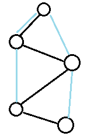
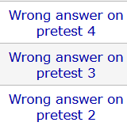
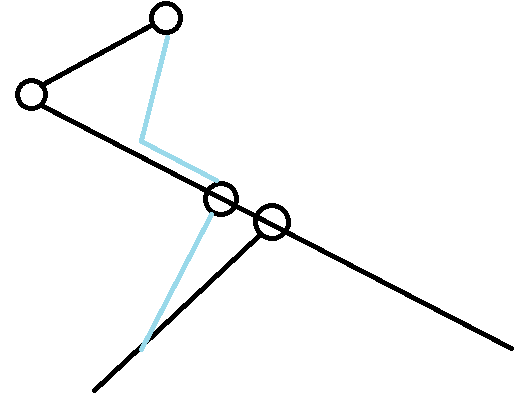

CF1987 赛后总结
比赛链接：https://codeforces.com/contest/1987
A. Upload More RAM
题目链接：https://codeforces.com/contest/1987/problem/A
题目大意：略。
做法
答案是 ：$(n-1)k+1$ 。
B.K-Sort
题目链接：https://codeforces.com/contest/1987/problem/B
题目大意：略。
做法
显然每个数字最多变到前缀 max 。
1 |
|
C. Basil’s Garden
题目链接：https://codeforces.com/contest/1987/problem/C
题目大意：略。
做法
倒着做，答案要么是他自己，要么是后面的答案加一。
D. World is Mine
题目链接：https://codeforces.com/contest/1987/problem/D
题目大意：略。
做法
首先，基于后手一个不改变答案的选项：不吃。
然后决定好哪些蛋糕是要吃的，且吃了某种蛋糕就一定要全部吃完，显然一定可以按照从左到右的顺序吃（不可以就说明这个方案不优）。
然后可以发现，任意一个前缀，只关心两个值：剩下的蛋糕的种类数，需要吃的蛋糕数，只要任意前缀前者大于等于后者，这个方案就是合法方案。
注意到，现在是三元组：前缀、剩余蛋糕种类数、需要吃的蛋糕数。
因此不妨考虑，在需要吃的蛋糕数相同的情况下，只维护最小的剩余蛋糕种类数。
原因是：假设只有需要吃的蛋糕数不同的情况下，假设 X 方案 > Y 方案的。
假设 X 在后面能到 Z 方案，把 X 方案后面需要吃的 $X-Y$ 种蛋糕全部不吃，并且前面换成 Y 方案，可以发现，这仍然是一个合法方案，而且需要吃的蛋糕数更少，也就是更优，所以 X 所能到的方案严格劣于 Y 能到的方案。
至于严谨证明，可以从前缀开始，每次把一定不可能产生答案的三元组扔掉，答案一定产生于剩下的三元组中，然后前缀从左往右扫就可以证明了。
时间复杂度：$O(n^2)$
1 |
|
没怎么看官方题解，官方题解也是类似的 $n^2$ dp ，估计区别不大。
别的做法
看题解说能 $n\log{n}$ ，先自己想了一个。
首先注意到，我们可以把颜色数记录成一个数组，排序，然后全体 $+1$ 。
这样问题就变成了，你可以选择一些颜色，满足前 $i$ 种颜色选择的数字和 $\le i$ 对于所有的 $i$ 都满足。
那么显然，按数量从小到大考虑每一种颜色是对的，不难证明，不再赘述。
下面是用 $O(n^2)$ 实现的版本，可以用线段树做到 $O(n\log{n})$ 。
1 |
|
然后一翻 CF 评论区，发现有一种比我这好写的多的单 log 做法。
就是从左到右，直接贪心，每次尝试直接吃完这个颜色，不能吃完就尝试替换之前吃过的颜色。
用一个堆就可以做到 $O(n\log{n})$ ，非常的好写。
这乍一看很对，但是怎么证明呢？
我们需要证明一个引理：
设吃了 $k$ 种颜色的最优方案，则 $k-1$ 种颜色的最优方案就是 $k$ 种颜色最优方案的子集，（证明采用上面那个模型）
考虑 $k$ 种颜色的最优方案和 $k-1$ 种颜色的最优方案，消去相同的选择。
得到：$\{x_1,x_2,x_3,…,x_{m+1}\},\{y_1,y_2,…,y_{m}\}$ （递增排列）
如果存在一个 $L,t$ 满足 $x_{t},y_{t}\le L, x_{t+1},y_{t+1}>L$ 吗，下标不存在认为是 $\infty$ 。
那么这两者一定可以交换且不影响双方的值，因为最优，所以消掉，下面认为不存在这种情况。
则一定有 $y_{1}>x_{2}$ ，考虑对于任意 $i$ ，即 $X$ 集合的贡献为： $\sum\limits_{\forall 2\le j \le m+1,x_j\le i}cnt_{x_j}$ ，同理，$Y$ 集合有：$\sum\limits_{\forall 1\le j \le m,y_j\le i}cnt_{y_j}$ ，根据前面的说法，$X$ 合法的 $j$ 的个数 $\ge$ $Y$ 集合的，而且知道 $X$ 集合的贡献 $\ge$ $Y$ 集合的，否则交换可以使 $Y$ 集合个数不减的同时更优。
综上，最后，我们可以交换 $\{x_{2},…,x_{m+1}\}$ 和 $\{y_1,y_2,…,y_{m}\}$ ，得到不劣的 $X$ ，但又最优，则两者和相等，证毕。（注：上面过程之所以这么繁琐是为了交换完后仍然合法）
因此，我们只需要时时刻刻维护以选择颜色数为第一权重，要吃掉的食物为第二权重的最优方案就行了，也就是上面那个做法。即上面那个做法可以归纳的证明，其每次得到的方案就是方才说的最优方案。
这样正确性就证明完毕了。
这里贴一份别人的代码：
1 | //https://codeforces.com/contest/1987/submission/268356662 |
E. Wonderful Tree!
题目链接：https://codeforces.com/contest/1987/problem/E
题目大意：略。
做法
感觉有点简单了，但是有趣。
注意到 $dp[x][i]$ 表示 $x$ 值为 $i$ 的时候的最小代价。
可以发现这是凸性的，而且斜率范围在 $[0,size]$ ，所以直接转移就行了。
当然这也有实际意义，差分一下，表示用代价 $k$ 让 $x$ 增加 $1$ 的操作至多能进行多少次，按照这个思路 dp 转移式就很容易列出来了。（想到这个意义并且证明这是对的还是花了我一定的时间）
时间复杂度：$O(n^2)$ 。
1 |
|
官方做法
你是真的笨啊，都长成父亲和儿子权值和的比较了，还想不到差分吗？那我只能说你是真 FW 啊。
总之，看了题解后，我觉得我这道题目只是根据见识硬做出来的，其实我根本就没有真正会这道题目。我有个可以过的做法，但是我并未真正触及其本质。
注意到这个不等式可以写成：
其中，如果没有儿子，就认为左式为 $-\infty$ 。
那么这个时候就很显然了，每次操作会把一个点 $+1$ ，父亲 $-1$ 。
要求用最少的步数把所有点变成 $\le 0$ 的。
注意到如果把每次操作，让这个点的父亲向其连一条边，表示父亲的一个 $1$ 流向了这个点，那么操作完后的图一定可以把所有边分成若干条路径，满足不存在一条路径的终点和另外一条路径的起点相同，可以看到，每条路径反映了一个 $1$ 的流向，起点包含了所有正点，终点一定是负点，贡献就是路径长度。
注意到最优方案中，只有正点可能作为起点，且作为起点的次数一定是其的值。（答案一定出在这个集合中）
那么问题可以等价的转化成求这个问题的最优解：每次将一个正点和子树内一个负电匹配，代价是距离，然后把正点 $-1$ ，负电 $+1$ ，直到没有正点为止。
这显然是一个费用流，所以在 CF 评论区和 luogu 都看到了赛时写费用流过题的佬。
当然，因为这个匹配非常简单，显然可以模拟，也不用写费用流。
先回看我上面的做法，实际上是在维护离当前点距离为 $d$ 的负数点能提供多少个匹配，这样就一目了然了。
当然，题解提供了种更好写的做法：每个点 BFS 一遍。
优化一下复杂度，做到 $O(n\log{n})$ 不难，把上面的数组合并写成可并堆的形式就行了。（能不能数组用启发式合并呢？不行，因为还有一个时间复杂度瓶颈是在做单点匹配的时候，需要弹出当前的最小值，数组用遍历的话复杂度仍然是 $O(n^2)$ 的）
能不能再快点？
在原图上，按深度从浅到深遍历每一个负数点，然后并查集维护到祖先的正数点，时间复杂度：$O(n\alpha(n))$ 。
能不能再快点？
可以，长链剖分，每个点用链表维护，合并的时候，两个链表至多弹出短链长度个，所以合并是 $O(n)$ 的，由于链表中的点数至多 $O(n)$ 个，所以弹出最小值也是 $O(n)$ 的。（之所以这样子归并复杂度不是两个数组长度和，是因为我实际上限制了值域范围，而不是限制了弹出个数。归并是两个数组长度和是因为短数组的最大值可能大过长数组的）
综上，时间复杂度为：$O(n)$ 。
最后说个幽默的事情，我在赛后说能启发式合并优化到 $n\log{n}$ ，因为我首先没想到弹出最小值的事情，其次我以为数组长度是和 $size$ 相关，后面问了人才发现，原来是和深度相关的。
很有意思。
F. Interesting Problem (Hard Version)
直接上 Hard Version 吧，我两个一起做的。
题目链接：https://codeforces.com/contest/1987/problem/F2
题目大意：略。
我的做法
这里，我采用复盘的形式写出我的做法，因为我觉得看懂最终做法不难，但是明白中间犯了什么错是至关重要的，以及怎么避免犯同样的错误。
首先可以注意到，如果在一开始就规定某些数字是作为 $a[i]=i$ 的位置被删除的，那么可以类似括号匹配一样，找到和其一起被删除的位置。
那么我一开始就想，会不会只要在一个位置前面能被删除的数字个数是 $\frac{i-a[i]}{2}$ ，这个位置就一定能被删除，所有都满足就合法吧。
当时的逻辑是，假设每次都有能删除的数字，每次选择最右边的数字删除，一定不会影响左边，而且还能贡献给右边的数字，让他们也能删除，而且最左边的数字一定能被删除。
然后喜提 WA ，原因：可能删除了两个左括号。
然后我就开始想，也就是说括号嵌套的时候，不能让内层括号的消除时间晚于外层括号，怎么办到呢？
显然从左往右 dp 是办不到的，不可能记录这么多信息，但是发现这是括号序列啊，这不直接区间 dp 。
但“晚于”这个词有点过于模糊不清了，有没有具体点的说法？
当时提出了一种想法，$f[l][r]$ 表示前面需要额外删多少个数字这个区间才可以完整消完（维护最小可能的解，至于为什么，写博客的时候感觉并不是很显然，但是当时很自然的就这么想了，也没质疑，反正都红了。但其实正确性也并不难，只要知道了括号序列合并和嵌套的充要条件，就可以发现维护最小值在任何时候都是最优的，所以直接维护最小值就行了，但前提是充要条件是对的），嵌套的要求一定要求外层的括号所需要删除的数字一定严格大于等于内层的。（但是具体怎么想的也忘了，太红了，但是反正差不多）
就关于 $f$ 的维护我就写了好几种逆天的东西，包括当不限于：找于 l 同奇偶的位置的 a 的最小值、必须要求外层有嵌套等，反正很逆天就是了，感觉就是纯红。
后面发现可以这么维护，区间合并的时候，前一个区间可以对后一个区间产生贡献就行了（至于为什么，也没细想），反正此时终于走上正轨了。
在正确的实现完这个做法后就过了。
时间复杂度：$O(n^3)$ 。
1 |
|
回忆一下，我当时几乎证明了这个做法是对的，但当时非常的红温，现在来看，确实这个做法是对的，而且证明起来并不困难，但反正当时就是红温，好想只证明了嵌套和合并的条件是当下充要的，并没有考虑后效性什么的，也就是零零散散的给了些部分的证明，并没有串在一起，给一个整体的、完整的证明，当因为在比赛，这也能理解，毕竟 WA 了再想也不迟。虽然但是，我觉得这不是并不证明的借口，我认为比赛时尤其是模拟赛，该证明的东西就应该证明，先不提不会假这种显性收益，不依赖比赛反馈做题的这种习惯是可以带来很多隐形收益的，包括对自己实力的提升和心态的考验。
你要说这场比赛我证明了吗？几乎所有做法我都在写之前给了些零散的证明，但有用吗？没有用，该 WA 还是得 WA ，为什么？首先证明是会假的，但我认为赛时给出正确而不假的证明也是实力的一部分。其次，其实这场比赛很多时候我都知道，我给的证明并不足以称为证明，即很多时候我只给出了局部的正确性，或者是可能能证明的一个方向，我并没有给出具体的，完整的，不容易出现瑕疵的证明，这场的 D,F,G 都是这样，D,G 都可以理解，简单题和时间不够，但是 F 在这一场，就是因为这个问题 WA 了一遍又一遍，但凡我当时多动点脑子，也不至于出现这种情况。将这种碎片化的证明当成证明，等于没有证明，在赛时给出一个正确的证明，我认为这也是比赛考验我们的东西，为了 rating 而舍弃掉证明，靠比赛反馈做题，依赖应试技巧，这和高考有什么区别，抛开这些不谈，我认为过度依赖这种应试技巧，终究会被反噬，所得到的分数，不过也是虚假的分数，不足以反映真正的实力。
但是这又出现了一个问题，为什么队长没证明，却几乎每次都能给出一个不会假的做法。首先队长赛时不证明很久了，因此自然也有规避错误的方法，这个方法是什么呢？我觉得就是想一些极端例子，在这些极端例子下是 well done 的，这相比相信一个不完整的证明，并且没有尝试证伪好多了。简单来说，队长多了个证伪的过程，而且队长证伪能力很强（相应的，他构造水平很高），证伪也是一种能力，至少比纯猜靠反馈要好的多。但你要说这也是种应试技巧，那也算是。但是很多时候极端证伪的过程和证明几乎也没有区别了，所以自然几乎次次都能证伪的话，证明的能力自然也不会差，在比赛时不失为一种策略，虽然我仍然不觉得这是赛时能够考验自己真正实力的习惯。但是队长真正实力也确实很厉害，那我只能认为队长每次的证伪其实和证明已经没有区别了，也就是换个说法的问题。（事实也是每次和他一起打比赛，让他给证明的时候他也能给出证明，队长厉害，无需多言）
所以我认为，比赛时该证明的时候，就要给出一个好的证明，不要过度关注那些排名和 rating 啥的，导致忽略了真正的修行。
回归正题，怎么证明这个 dp 是充要的呢？
首先明确给出 dp[l][r] 的定义，最小的数 $x$ 满足前面在删除 $2x$ 个数字后，区间 [l,r] 内的数字可以全部删除。
根据前面的说法来看，我们只需要证明采用以下方案可以删除完整个序列就行了。
每次删除最右边的合法括号，这对括号满足：a[i]=i ，内层为空。
这完全等价于什么呢？设任意一个括号序列，对于任意一对括号，其的可删除括号为，所有 () 满足 () 都在其的左括号左边，可删除左括号个数 * 2 $\ge i-a[i]$ 。
用这个性质证明 dp 就显然了。
以下皆是吹水。
你要说我当时知道这么证明纯属狗屁，首先这个性质是在我写博客的时候才想到的，其次我当时只证明了两个括号序列合并，两个括号序列嵌套，那个条件似乎足够充要，但是实际上，为什么要设最小的次数，为什么满足就一定有解呢？当时我是一定没想的。即使现在，我也想不太明白，因为如果纯从局部去证明整体，我很难去说明为什么局部满足这个条件，整体就一定满足，难道归纳吗？拿这又是一个很屎的过程，因为一定会用到优先删右边这个性质，很不巧，这是个整体性质，把整体性质用在局部的归纳法就是一坨屎，就只能说隐隐感觉这样子看非常的正确，但实际书写书写不出来。
一般发生这种情况是因为，我们在想这个问题的时候，默认的使用了某些性质，比如这里就默认使用了能删优先删右边，所以即使左边删多了也不要紧这个性质。但是默认使用的这个性质，在我们并不知情的情况下，是对的吗？用对了没？我们都不知道，所以你要说隐隐感觉对就是对的，我觉得纯放屁，到时候正式赛假了就直接寄了，痛哭流涕。
那如果要从整体去证明，我觉得就不能叫从这个 dp 的角度去证明了，两者的关系大概率是整体证明了一个性质，然后用 dp 维护，这里 dp 就只是维护工具，并不作为证明的载体，但我当时肯定不是这么想的，我是直接想的 dp ，并没有说先找到性质，然后再想办法用 dp 维护这么一个思考过程。
反正我觉得，有些 dp ，先想到一个感觉正确的 dp ，再从这个 dp 去证明做法正确性就是耍流氓。
我个人觉得做大部分 dp ，正确的流程就应该是，我先想到这个题目的一些充要的性质啥的，然后再尝试用 dp 去维护这些充要的性质。
即不是从 dp 本身去证明 dp 的正确性，而是先把 dp 要维护的东西证明了，这样使用 dp 维护就完全正确了。
所以我认为，这道题目正确的、自然的思考过程大体上应该是这样：
以任意路线发现充要条件：可以采用后面这个方案删除完整个序列：每次删除最右边的合法括号，这对括号满足：a[i]=i ，内层为空。
然后再发现一个等价的充要条件：对于一个括号序列，对于任意一对括号，其的可删除括号为，所有 () 满足 () 都在其的左括号左边，可删除左括号个数 * 2 $\ge i-a[i]$ （或者是等效的可以方便导出 dp 方程的充要条件）。
使用 dp 维护这个过程，取得 AC 。
总之我认为，做一个 dp 题目肯定是先提出充要条件，再维护，而不是先提出 dp ，再证明。
和官方做法没啥区别。
G. Spinning Round
Easy Version
题目链接：https://codeforces.com/contest/1987/problem/G1
题目大意：给你一个排列，每个点可以向左边最近的比它大的点连边，或者向右边，问得到的联通图的直径的最大值是多少。
我的做法
首先在笛卡尔树上考虑，发现每个点只可能连向自己的祖先，而且根节点一定是自环，可以知道连通的充要条件是除了根节点外的所有点不自环，而且最终一定是一棵树。
所以可以知道求直径等价于求新树中的直径，这样就好求多了。
我们考虑每条路径在这条路径的 LCA 处考虑。
有两种情况：
- 来自不同的儿子。
- 来自相同的儿子。
情况 $1$ 是简单的，重点是情况下，可以发现，他们都一定来自于：
左儿子-右儿子-右儿子-右儿子-右儿子… 这条链，或者反过来。（下面假设就在这条链上处理，反过来同理）
直接在这条链上找就行了，只要一条链能线性处理，则时间复杂度是 ：$O(n)$ 的。
注意到在这条链上选择了一深一浅两个点，浅的点一定会沿着这条链到达 LCA ，然后深的点直接连向 LCA 。（注意，这里浅的点会选择其所在路径与链交集的最深的点，深的点会选择最浅的点，下同）
难点在于发现这个过程可以嵌套，距离来说，如果在链上选择的两个点是相邻的，则下面的路径有可能同时来自于浅的点的子树，导致嵌套。

上面是一个例子，蓝色是新树，当然，这个例子新树的构建不止这一种，这里只是给出上面那种嵌套情况会发生的新树，显然存在以这种情况为唯一最优的树。
用 dp 额外维护就行了，dp[x] 表示现在有两条链，一条连向 $x$ ，一条连向 $x$ 的父亲的长度和。
时间复杂度：$O(n)$ 。
当然，你可能会问，这种讨论题你怎么保证自己能讨论对的，我经常漏情况，要怎么处理？
虽然我主观上认为，讨论的难度反比于你的实力，你的实力越高，你在一开始就越容易找到方便讨论的角度和做法。但是实际上我完全不知道怎么保证自己能讨论对，因为：

1 |
|
错误回顾：
WA 的主要原因：
- 没有发现嵌套的情况。
- 代码写错了。
Hard Version
题目链接：https://codeforces.com/contest/1987/problem/G2
题目大意：有些点会固定连向左边或者右边。
我的做法
书接上回，证明合不合法简单的。
问题在于，当某些点的方向固定后，很多原来可以扔掉的劣的情况，就必须重新考虑了。
首先大的情况还是那么几种（依旧认为是左儿子-右儿子-右儿子-右儿子-右儿子… 这条链）：
- 来自不同子树，不同在于，来自一个子树的最长路不一定来自儿子。
来自相同子树。
一样的，我们还是在链上考虑，先假设枚举一深一浅的两个点不相邻，但是有两点不同。
- 浅的点不一定会沿着链到 LCA 。
- 浅的点所在的路径的下方不一定来自其左儿子。

其中 1 好解决，2 不好解决，这需要我们在每个点额外维护一个东西，从这个子树出发向外连边是 L 或者是 R 的最长路径，这样就能维护不相邻的情况。
相邻呢？
还是一样，维护 dp ，而这与上面出现了相同的两个问题，用相同的办法解决就行了。
时间复杂度：$O(n)$ 。
1 |
|
犯错记录：
- 代码写错了。
- 发现忘记浅点的路径可以来自其右儿子的左二子。
- 发现但是用了错误的方法解决，后面新维护了一个 dp 解决了这个问题，最后 AC 了。
感觉这种题目就是很屎，很需要讨论，很看你的讨论功底的题目。
别的做法
在提交中找到的一份做法
1 | //https://codeforces.com/contest/1987/submission/268586570 |
思考一个事情，我的做法相当于是直接在路径的 LCA 上考虑，这样考虑的好处是：
- 直观，很容易想到这个做法，而且明确知道自己只需要讨论什么东西就足以完成此题。
- 可实现，在讨论完后所需要维护的东西一般都是可以简单维护的。
但是坏处也是显然的：
讨论以后得到的每个部分相对独立，很难整合起来，因此码量比较大。
但是如果我们换个角度看，从下往上考虑，即考虑两条路径什么时候交到一起。
依旧是两种情况：
- 两条路径，一条往左，一条往右，交到一个点上。
- 两条往同个方向，交到一个点上。
注意到这个路径往左往右，也就是这个子树往外的第一条边往左往右，在我的做法中也有类似的定义：$g[x][0/1]$ 表示 $x$ 子树内往外的第一条边是什么方向。
顺着这个思路想，那怎么维护 $2$ 呢？注意到，肯定会有一个时间点，这两条路径一定会从 $x$ 子树的左儿子和右儿子内出来，其中左儿子往左，右儿子往右，所以维护 $g[x][2]$ 表示子树内有两条不相交的路径，一条往左，一条往右的长度。
因此就得到了上面那个做法 ，$g$ 也就是上面的 $dp$ 。
实际上，这个做法所维护的 $g[x][2]$，放到我那个做法中，就是把来自同一子树的两条链在较浅的那个点中产生并一路维护上来，相当于直接在遍历树的过程完成了转移，而不是单独再开一个部分计算答案。同时这个单条链的维护的过程和嵌套转移的过程是一样的，可以直接用一个转移过程，所以就可以少处理很多东西了。
这个思路相较于我的思路，明显的优势就是考虑主体变少了，从一条条链变成了一个个点，自然要好写好想（这里的好想指的是在初始方向正确的情况下，后面的细节都很简单，不是说这个思路好想）。
反思一下，虽然说做法是同构的，但是从这个做法想出那个做法，我感觉要难于直接换个角度考虑。就像很多题目直接考虑考虑不出来，但是换个角度就能考虑出来，做法本质就在那，都是一样的，但是换个角度难度就能大幅减少。
因此，考虑简化做法的时候不要只寄希望于优化当前的做法，因为将其直接优化到更加简洁的做法或许难度很大，有时候可以尝试换个角度观察这个做法，或许能很轻松的得到一个简洁得多的做法。
官方做法没看懂，感觉思考起来不太自然，而且看起来实现也很麻烦，咕了。不过能不在笛卡尔树上完成这道题目确实厉害，我只能说。
比赛小结
评价一下，打的一坨，还好最后 G1 撞对了，否则坠机了。
比赛小结已经写在了 $F$ 的做法中。
总结下来就一句话 ：
模拟赛时的题目该证明的就要给出完整的证明，不要搞一些自欺欺人的事情，不要过度的关注排名和 rating 。（当然时间不够的时候猜猜结论也是可以的，猜结论也是能力的一环，但是时间充足的时候或者中期的题目就别猜了，要给出完整的证明）